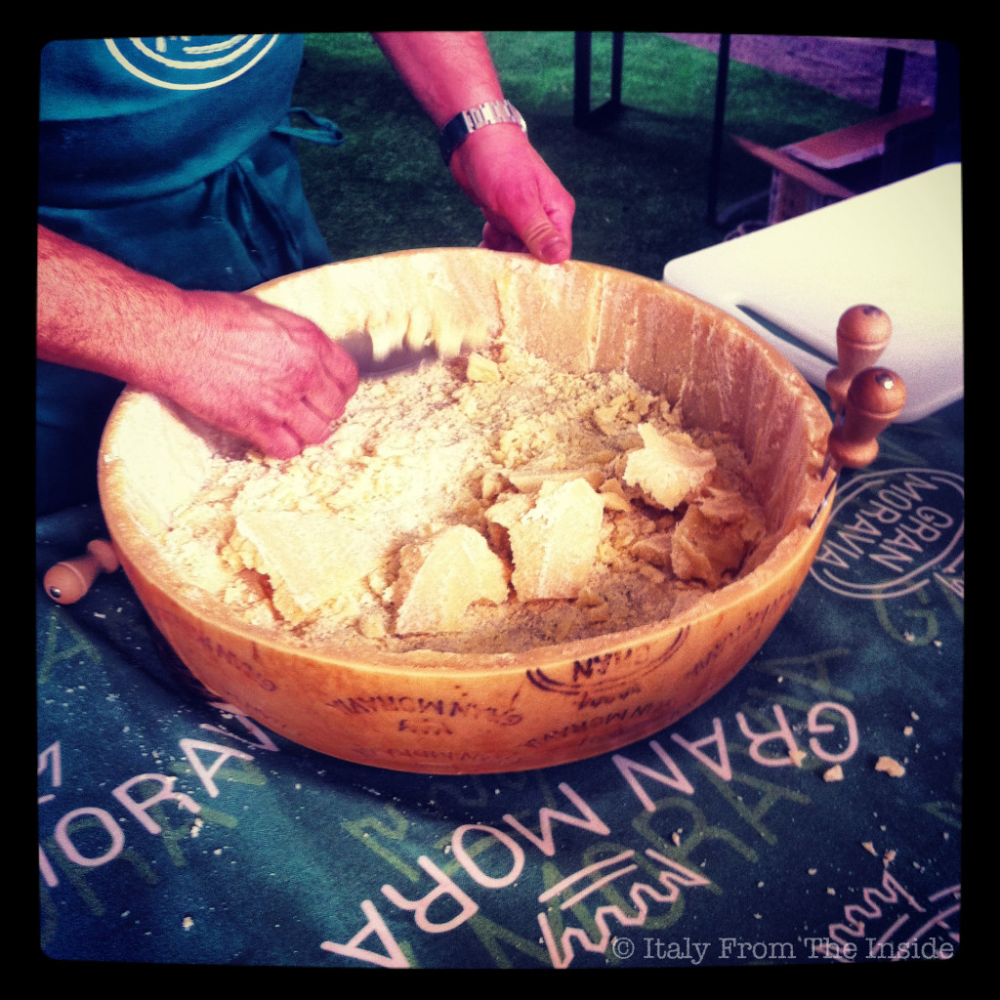

There's the Parmigiano Reggiano, the Grana Padano and then the Gran Moravia, which are all part of the same family of hard, granular cheeses that are cooked but not pressed . What makes the Gran Moravia different from its "brothers" is that it is produced in Moravia, a region of the Czech Republic, and then it is aged in Zanè (Veneto). Suitable for vegan diets, since it's made with vegetarian rennet, it is delicious when eaten in small wedges or grated over a pasta dish.